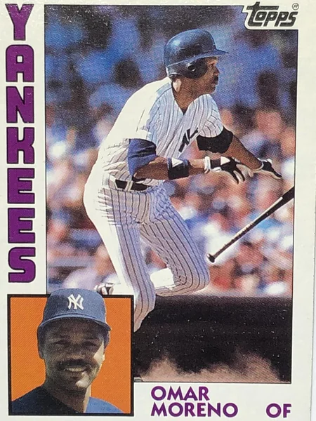
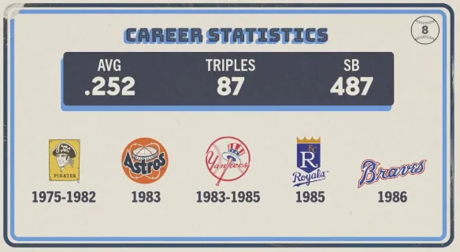

Omar Moreno
Career Highlights & Facts
(Facts are AI-generated and may require verification)
- This speedster was a key defensive anchor for a championship-winning squad, famously securing the final out of the deciding game of the fall classic.
- He was a pioneer of the basepaths, becoming the first player since the turn of the century to record three consecutive seasons with at least 70 stolen bases.
- Known for his elite range in the outfield, he once led his league in putouts by a center fielder while playing for a team that turned its home stadium into a 'motor speedway' of base-stealing.
Would you like to find out more about Omar Moreno?
Career Totals
| WAR | AB | H | HR | BA | R | RBI | SB | OBP | SLG | OPS | OPS+ |
|---|---|---|---|---|---|---|---|---|---|---|---|
| 9.6 | 4992 | 1257 | 37 | .252 | 699 | 386 | 487 | .306 | .343 | .649 | 79 |
Statistics via Baseball-Reference.com
The Original Clue
